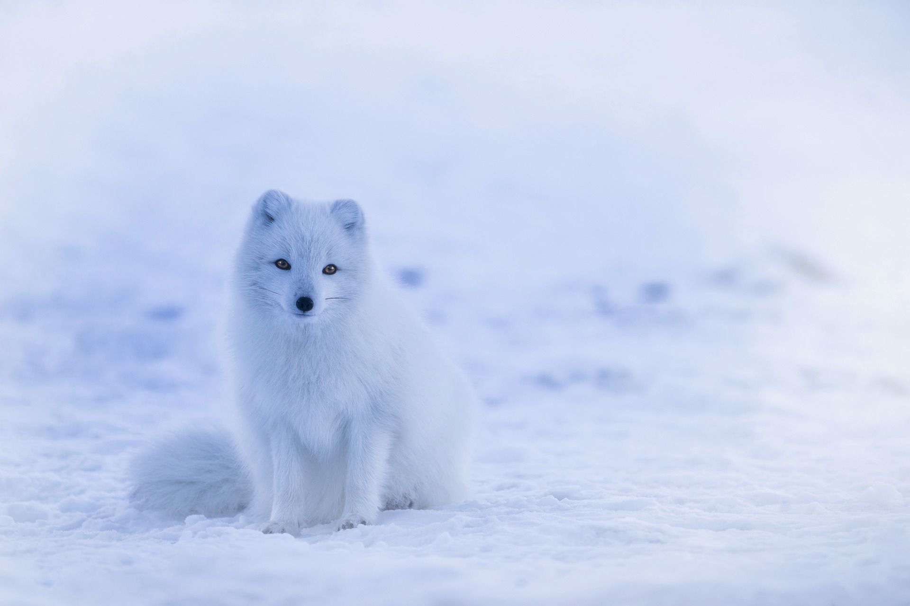
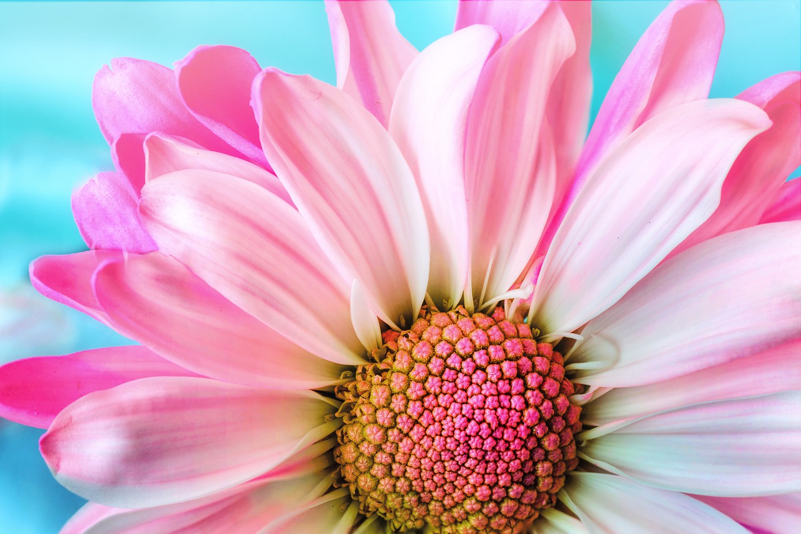
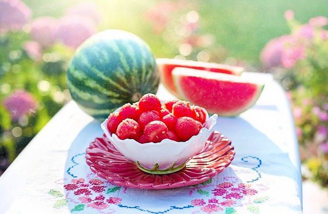

I. LOVE. FOXES. I think they are the CUTEST animal that exists on this planet. They are incredibly smart and sly, and that usually means people will think they are evil, but I won't have any of that. They're so smart, being able to adapt to new environments like urban ones.

And like come on, Arctic foxes are just the cutest with their white fur. You cannot tell me that this fox isn't cute.

I love gardens and I love having flowers in gardens. I also love flower gardens. Flowers are amazing in the sense that different types of flowers can look so different from each other, but each one is beautiful and unique in their own way. I just want to grow as many flowers as possible in my lifetime.

When it comes to summer fruit, watermelon is my favorite fruit. At every picnic or gathering, I know that I can expect watermelon to be there and it makes me so happy.

I want to be a bird researcher, or ornithologist as they call it. I think that they are just so fascniating. Their features and how they live and survive is just so incredible and I want to be the one in the nature documentaries rather than be the one watching them.